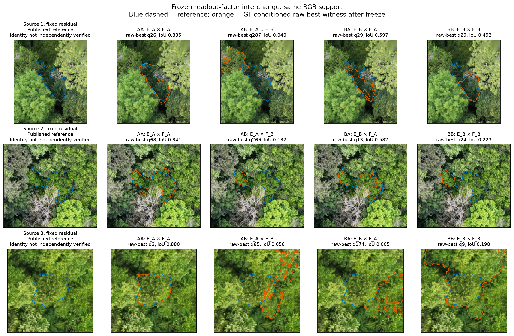

READOUT_INTERCHANGE_NOT_A_USEFUL_RECOVERY_POLICY_CAUSE_NOT_IDENTIFIED
The user resumed autonomous research. The previous external-reference block was too broad as a stop for all scientific work: it blocks the independent-reference study, but not a frozen published-reference inference diagnostic. This experiment does not obtain independent annotators or resolve biological identity. The original-method objective remains unachieved.
Two completed seed42 Mask DINO checkpoints: S0 matched native continuation and S1 conventional scale exposure. Neither is retrained here. Same three previously exposed TRAIN windows, 298 reference occurrences / 133 source-small, exact RGB/validity and native300-query budget. A is native1024; B is exact pixel replication to2048 over the same physical support. Query/site IDs follow their own embedding source; they are not aligned across encoder grids.
The factual logits are E_A F_A and E_B F_B. Passive hooks capture the final mask embeddings E and pixel feature field F. AB uses E_A with F_B; BA uses E_B with F_A. These are final-readout interventions, not query insertion or decoder restoration. Class logits and box/site descriptors follow E. All independent masks use the same canonical materialization, score, area and NMS rules.
Twelve actual frozen carrier forwards produced24pools /7200raw RLE masks, frozen before new reference joins. Native factor products exactly reproduce model logits. AA/BB raw masks, scores, accepted/final IDs exactly reproduce the prior experiment. A paired sign change of E and F preserves native logits exactly, implementing the mathematical gauge control. No optimizer update, TEST/protected review/SAME6evaluation or new annotation occurred.
AP values are0–100 on these fixed crops, not comparable with full-tile SAME6/BAM. Raw availability, simultaneous matching and score-ranked AP are distinct; see full CSVs for all fields.
| Model | Readout E/F | Raw50 | Raw75 | Final TP50 | FP50 | AP | AP75 | Small TP50/133 |
|---|---|---|---|---|---|---|---|---|
| S0 | AA | 279 | 248 | 276 | 163 | 62.601 | 77.169 | 118 |
| S0 | AB | 32 | 14 | 23 | 135 | 2.557 | 2.088 | 5 |
| S0 | BA | 70 | 45 | 51 | 140 | 5.586 | 5.105 | 6 |
| S0 | BB | 132 | 51 | 114 | 329 | 6.396 | 4.103 | 41 |
| S1 | AA | 277 | 240 | 276 | 222 | 61.641 | 74.496 | 116 |
| S1 | AB | 91 | 47 | 88 | 181 | 12.833 | 11.728 | 17 |
| S1 | BA | 129 | 85 | 125 | 312 | 20.450 | 21.997 | 34 |
| S1 | BB | 241 | 163 | 236 | 325 | 38.573 | 37.199 | 88 |
Gross changes (all reference IDs):
| Model | Contrast | New/lost raw50 | New/lost final50 | New/lost small |
|---|---|---|---|---|
| S0 | BB_to_AB | 8/108 | 6/97 | 1/37 |
| S0 | BB_to_BA | 21/83 | 18/81 | 4/39 |
| S0 | AA_to_AB | 0/247 | 0/253 | 0/113 |
| S0 | AA_to_BA | 1/210 | 0/225 | 0/112 |
| S0 | AA_to_BB | 0/147 | 0/162 | 0/77 |
| S1 | BB_to_AB | 3/153 | 4/152 | 2/73 |
| S1 | BB_to_BA | 9/121 | 11/122 | 6/60 |
| S1 | AA_to_AB | 2/188 | 2/190 | 1/100 |
| S1 | AA_to_BA | 2/150 | 2/153 | 0/82 |
| S1 | AA_to_BB | 2/38 | 2/42 | 1/29 |
The previously observed20S1references have AArawIoU≥.75 and BBrawIoU<.50. ABrecovers2/20; BArecovers7/20. Registered operational pattern: NO_DOMINANT_INTERCHANGE_PATTERN. No dominant factor screen passes. This exposed subset is not an independent sample, and these counts refer to raw availability, not deployable TP gains.
In S1, BA adds9raw qualifications but loses121 relative to BB; it adds11final matches but loses122. AB adds3raw /4final matches but loses153raw /152final. This directly fails the requirement to recover instances without losing many others. The swaps are not useful inference policies and will not be released as improvements.
The loss occurs before final scoring for many references: raw availability itself collapses. Keeping original factual query scores does not restore the missing raw masks. SAME_COUNT.csv reports all fixed count controls; these comparisons do not hide gross losses or convert two-encoding interventions into efficient single-pass inference.
At matched output counts in S1: BB→AB changes206→88TP at269outputs; BB→BA changes226→125TP at437outputs. Thus the failure cannot be explained only by lower prediction counts.
After the primary screen was known, a separately documented saved-mask analysis compared each crossed raw-best witness with the exact same source query in its factual pool. No forward or policy changed. In BA's7qualifying strong-residual witnesses, all7same-query factual BBmasks are belowIoU50; only1of7source-query boxes has boxIoU50. Six of the7crossed witnesses survive final suppression; survival alone is not one-to-one matching. In AB's2witnesses,1same-query factual AAmask and1source-query box qualify atIoU50.
The conditional existence of a usable Bembedding under F_Adoes not prove that this query already described the same localized crown under native B. The readout's geometric/identity association can change when its field changes; a poor box also is not proof that a mask cannot qualify. These observations prevent calling the7cases evidence that query localization was already solved. See EXPLORATORY_SAME_QUERY_NOTE.md and results/EXPLORATORY_SAME_QUERY.csv; this supplementary analysis does not alter the registered decision.
OBSERVED: both native E/F pairs work far better than their interchanged counterparts. Some individual masks can be produced by a crossed pair, but aggregate geometry and final recovery regress substantially in both frozen checkpoints.
DERIVED: a good embedding from one encoding is not automatically compatible with the field from another. Neither raw-mask rescue on a subset nor poor mixed-state performance identifies an independently deficient component. For any invertible channel transform C, E_B C^(-1) and C F_B leave native BB unchanged while generally changing both swaps. With C=−I, both cross logits reverse sign. This valid established bilinear property is a counterexample to treating interchange failure as a negative feature-capacity certificate; it is not a new theorem or segmentation mechanism.
UNVERIFIED: which trained upstream operation causes the native A/B discrepancy, whether a channel basis change or a different type of representation change explains mixed-state incompatibility, whether an inference-valid single-carrier intervention helps, and any independently justified novelty. No Procrustes alignment, new consistency loss, decoder, embedding head or longer training is automatically opened.
The methodology overlaps established activation/interchange interventions. Mask DINO supplies the actual bilinear readout. Zhang and Nanda, ICLR2024 studies intervention-method/metric sensitivity in language models; its results are not claimed as crown evidence or a reproduced vision baseline. Mechanistic localization remains conditional on the intervention and its potentially untrained hybrid states.
Close this fixed interchange recipe as an unsuccessful recovery policy and an inconclusive decomposition of the native failure cause. Retain the strong factual carriers and conventional RR baseline. This does not establish RGB insufficiency, a frozen-feature ceiling, a universal decoder limitation or exhaustion of the ITC problem. It also does not justify a new method by renaming feature/query alignment.
One paired seed, one crop per three sources, parent-seen TRAIN annotations and an artificially re-encoded input. No independent geographic/reference-stability evidence. Source-small uses inherited original published-tile annotation area; crop fragments and overlapping memberships are preserved. Displayed best masks are chosen with GT only after predictions are frozen, for diagnostics, never inference.
Actual inference/extraction/readout/parity-check walltime 17.761s; peak allocated GPU 4669.7MiB; peak hostRSS 2.231GiB. This includes diagnostic hashing/parity overhead and is not single-pass deployment latency. Verification checked 7200raw and2996final masks, both score policies, validity, provenance, matching, the same20-reference subset and unchanged checkpoints.
Commands from repository root (executed in sequence):
bash
cs2_venv/bin/python research/ITC_READOUT_FACTOR_INTERCHANGE_V1_20261110/code/predict.py
cs2_venv/bin/python research/ITC_READOUT_FACTOR_INTERCHANGE_V1_20261110/code/analyze.py
cs2_venv/bin/python research/ITC_READOUT_FACTOR_INTERCHANGE_V1_20261110/code/verify.py
cs2_venv/bin/python research/ITC_READOUT_FACTOR_INTERCHANGE_V1_20261110/code/same_query.py
cs2_venv/bin/python research/ITC_READOUT_FACTOR_INTERCHANGE_V1_20261110/code/report.py
Prediction/analysis completion guards refuse overwriting completed outputs. For reproduction, use a fresh sibling directory preserving relative repository depth and bound asset access; do not delete seals. Full feature fields/dense logits are NOT_STORED under the preregistered disk contract. Final E matrices, all independent RLEs, query/site/class/box provenance, latent/input/checkpoint/code hashes and logs are retained. No trained checkpoint is claimed because none was trained here.
Protocol, math and counterexample, complete metrics, individual new/lost, same-count, original-score control, source, size, verification, fixed diagnostic figure.
